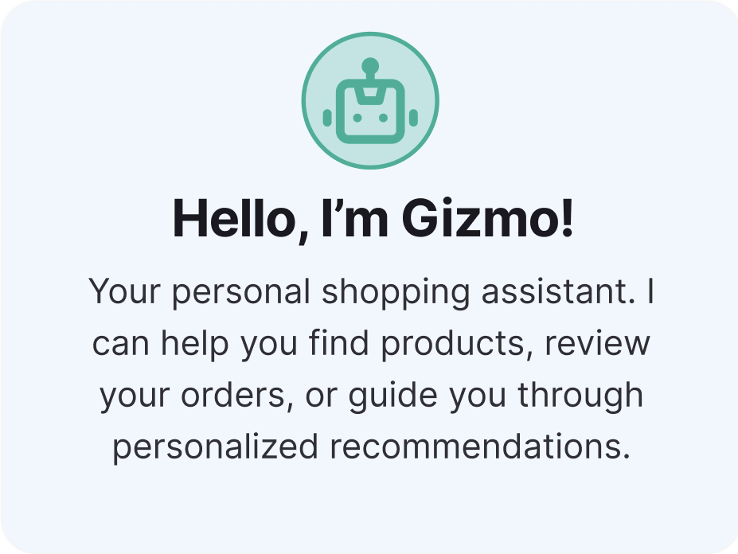
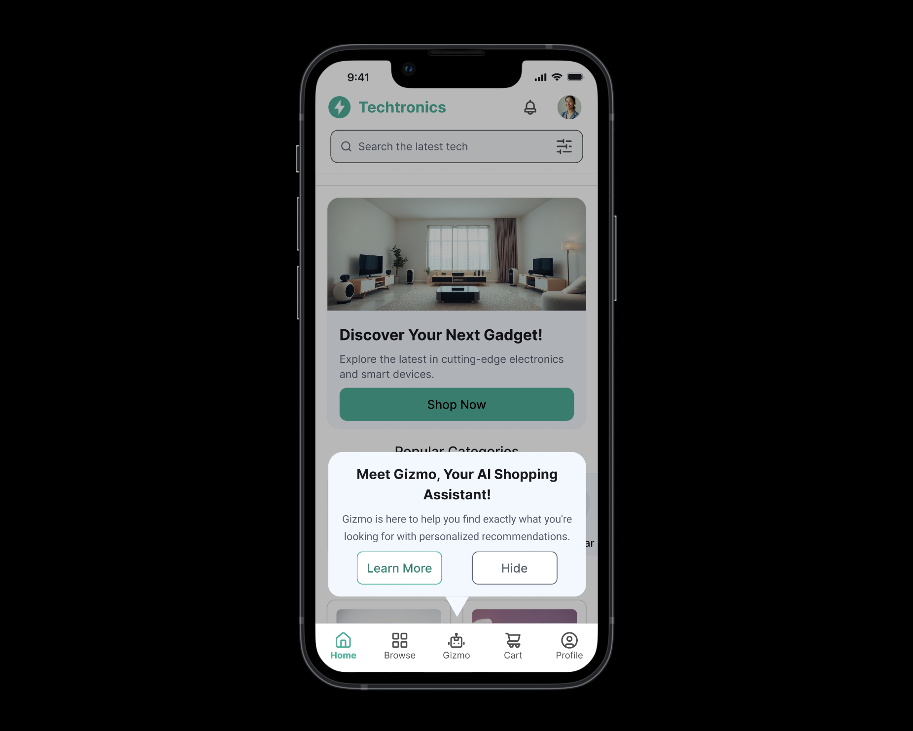
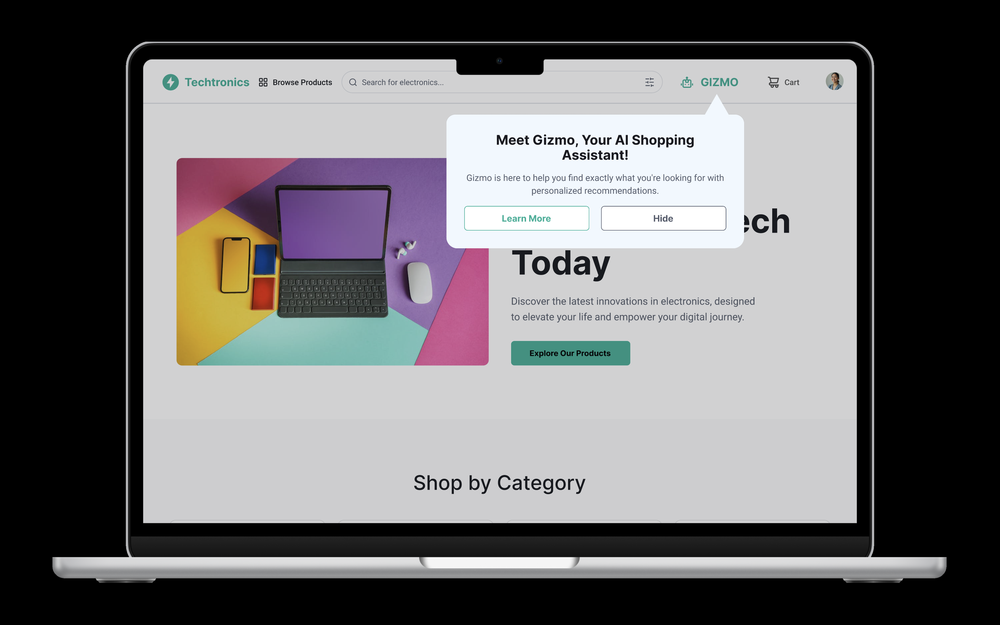

Techtronics:
E-commerce & AI
By automating routine research and surfacing important information, we aim to help users shop confidently and efficiently.
User Centric
Personalized AI shopping assistants
Efficiency
Streamlined 3-step checkout flow
Inclusive
WCAG 2.1 compliant interface


Mobile Landing Page

Website Landing Page
1. The Problem
Online shoppers need a reliable, efficient, and personalized way to find products that genuinely fit their needs without the cognitive overwhelm that hinders confident purchases.
- Information overload when evaluating items.
- Decision fatigue when faced with too many options
- Postponing purchases or abandoning an e-commerce platform altogether
Key Objectives
Reduce CAC from 3 mins to 1 min.
Bring the brand into the AI era.
2. User Research
Users feel overwhelmed by financial jargon and complex navigation.
Automated portfolio balancing is the most requested feature by Gen-Z.
80% of users prefer mobile-first access for quick daily checks.
4. Usability Tests
The Goal: Test if new users can set up a portfolio in under 2 minutes.
The Result: 92% success rate, average time 1:15m.
6. Hi-fi Wireframes & Final Prototype
Intelligent Dashboard
The final interface uses a high-density, low-latency UI system designed for clarity.
- Real-time data syncing
- Customizable widgets
- AI-powered risk analysis